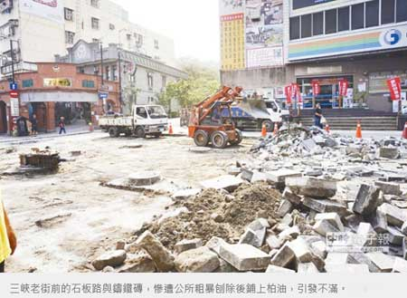

三峽老街石板路、鑄鐵磚遭公所刨除
朱道歉允速修補
陳心瑜、葉德正｜中國時報／新北焦點｜2016年4月13日
三峽老街入口處別具特色的石板路、鑄鐵磚日前遭公所無預警刨除，改鋪柏油，引起地方人士不滿；新北市長朱立倫12日首度道歉，坦言區公所「手法粗暴、不被接受」，將儘速修補錯誤；地方人士肯定朱立倫願傾聽民意，希望早日恢復原貌。
三峽老街入口處的石板路面與鐵磚，為2006年老街復舊工程興建，上頭刻有三峽的歷史簡介、畫家李梅樹作品，可說是老街的一大特色。
但三峽區公所多次接獲里長與居民陳情，「騎車經過石板路常摔車受傷」，要求公所改鋪柏油路；區公所編列預算後6日進行刨除工程，未料引發在地居民、文史團體不滿。
「雖然是公所作為，但市府要負起責任，立刻透過公民參與方式補救。」朱立倫12日在市政會議強調，文化、歷史的傳承延續很重要，即便是為了交通安全，都是不妥的、也不應該。
朱立倫指出，防滑等安全問題可用現代技術補強，即便區工所立意良好，也不須用粗暴方式解決，也要市府團隊引以為戒，未來決策應該更周延。
朱立倫表示，復舊工程將交由地方公民團體、民眾討論再決定，一切尊重地方團體，並保存地方文史，「公務員犯的錯，也要懲處並追究責任。」文化局主秘紀淑娟表示，將居中協調公所、地方文史團體意見，在地方民意、傳統文化間取得平衡。